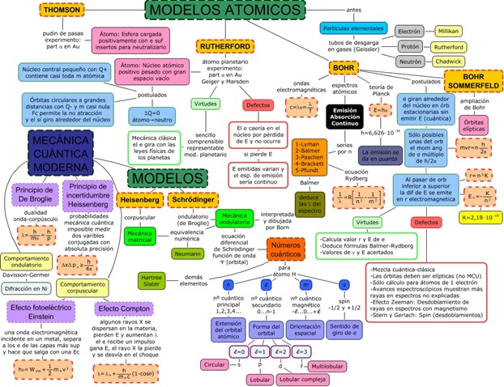

Modelo Atómico
Los modelos atómicos
Los griegos fueron quienes por primera vez se preocuparon por indagar sobre la constitución íntima de la materia, aunque desde una perspectiva puramente teórica, pues no creían en la importancia de la experimentación.
Cerca del año 450 a. de C., Leucipo y su discípulo, Demócrito, propusieron que la materia estaba constituida por pequeñas partículas a las que llamaron átomos, palabra que significa indivisible.
Los postulados del atomismo griego establecían que:
■ Los átomos son sólidos.
■ Entre los átomos sólo existe el vacío.
■ Los átomos son indivisibles y eternos.
■ Los átomos de diferentes cuerpos difieren entre sí por su forma, tamaño y distribución espacial.
■ Las propiedades de la materia varían según el tipo de átomos y como estén agrupados.
En 1805 el inglés John Dalton (1766-1844), publicó la obra Nuevo sistema
de la filosofía química, en la cual rescataba las ideas propuestas por
Demócrito y Leucipo dos mil años atrás.
La teoría atómica de Dalton comprendía los siguientes postulados:
■ La materia está constituida por átomos, partículas indivisibles e indestructibles.
■ Los átomos que componen una sustancia elemental son semejantes entre sí, en cuanto a masa, tamaño y cualquier otra característica, y difieren de aquellos que componen otros elementos.
■ Los átomos se combinan para formar entidades compuestas. En esta combinación los átomos de cada uno de los elementos involucrados están presentes siguiendo proporciones definidas y enteras. Así mismo, dos o más elementos pueden unirse en diferentes proporciones para formar diferentes compuestos.
Modelo Atómico de Thomson
El descubrimiento del electrón, en 1879, el físico inglés William Crookes,J; fue posible gracias a una serie de experimentos alrededor de un dispositivo llamado tubo de rayos catódicos, que consiste en un tubo de vidrio provisto de dos electrodos, herméticamente soldados en los extremos de este y a través de los cuales se hace pasar una corriente eléctrica. Thomson 1895 estableció, que dichos rayos eran en realidad partículas, mucho más pequeñas que el átomo de hidrógeno y con carga negativa, que recibieron el nombre de electrones. En la actualidad se ha establecido que la carga de un electrón es -1,602 X 10-19 culombios y que posee una masa de 9,11X 10-28 g.
Eugen Goldstein (1850-1930), realizó algunas modificaciones al diseño inicial del tubo de rayos catódicos. Observó que detrás del cátodo se producía otro tipo de resplandor, proveniente
del ánodo, por lo que dedujo que los nuevos rayos poseían carga positiva. Posteriormente fueron bautizados como protones y se determinó que su carga era de igual magnitud que la de un electrón, es decir, -1,602X 10-19 culombios, mientras que su masa tenía un valor cercano a 1,673 X 10-24 g.
Estos descubrimientos contradecían la creencia de que el átomo era indivisible, por lo que fue necesario concebir un nuevo modelo atómico.


Investiga sobre las aplicaciones prácticas del tubo de rayos catódicos. ¿Qué aparato de uso común se basa en este principio?
Luego, te sugiero revisar el siguiente video para conocer el uso del CRT
(cliqueá sobre el enlace): Tubos de Rayos Catódicos Así se hace
Obra publicada con Licencia Creative Commons Reconocimiento Compartir igual 4.0